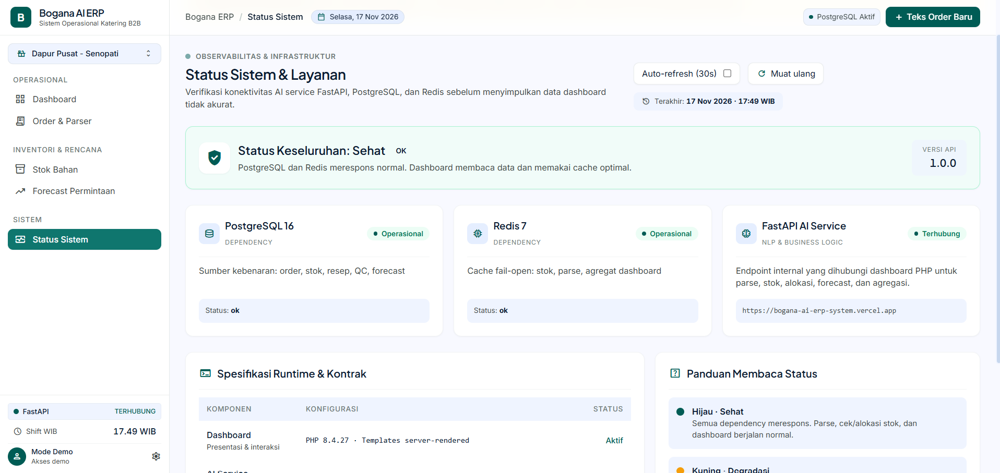

BOGANA AI ERP SYSTEM
Order teks bebas jadi item menu lewat NLP parser, stok bahan dicek transaksional di PostgreSQL, lalu disajikan cepat lewat cache Redis dan dashboard PHP.
01 // MASALAH
Order masuk dari WhatsApp, email, atau telepon dalam bentuk teks bebas: "40 nasi bogana komplit, 15 ayam kecap". Operator harus menerjemahkannya ke item menu, lalu memastikan bahan cukup sebelum order dianggap bisa dipenuhi.
Di sisi operasional, dashboard butuh ringkasan order, stok menipis, dan forecast — tapi agregat yang dihitung ulang tiap request bikin lambat.
02 // ALUR & KEPUTUSAN
- Parser bukan sekadar substring. Teks diurai jadi item + kuantitas, dengan warning
MENU_NOT_FOUND,QTY_MISSING,QTY_AMBIGUOUS,DUPLICATE_LINE, danLOW_CONFIDENCE. Input merah muda nggak diam-diam dianggap benar. - Stok dipotong dalam satu transaksi. Kebutuhan bahan dihitung dari resep, stok negatif dicegah, dan optimistic locking lewat kolom
versiondipakai supaya dua order bersamaan nggak saling menimpa. - Redis cache dengan TTL berbeda. Snapshot stok 60 detik, hasil parse 15 menit, agregat dashboard 30 detik. Kalau Redis mati, sistem fail-open — tetap jalan tanpa cache.
- QC dulu, baru fulfilled. Order hanya bisa selesai kalau seluruh item punya log QC
pass.

03 // INSIDEN: BUG P0 YANG LOLOS KE PRODUKSI
Ini bukan contoh fiktif. Smoke test produksi menemukan restock bahan selalu mengembalikan 500 INTERNAL_ERROR, sehingga order berstatus short nggak bisa dipulihkan.
| Tahap | Temuan |
|---|---|
| Investigasi | Dashboard tetap sehat; error cuma muncul di satu aksi. Log mengarah ke handler generik FastAPI, bukan pesan domain. |
| Akar masalah | StockRepository.restock() memanggil self._require_pool(), padahal method itu cuma ada di repository lain. |
| Kenapa lolos | Test API memakai FakeStockRepository, jadi jalur repository asli nggak pernah dieksekusi. |
| Perbaikan | Menambahkan _require_pool() dan memakainya di list_all, list_menu_skus, dan restock. |
| Pencegahan | Regression test dengan StockRepository asli + fake pool/transaksi, plus smoke test produksi yang aman. |
| Verifikasi | Restock ING-RS-01 berhasil, stok 850 → 850,01; smoke test 18 PASS, 0 FAIL, 1 SKIP. |
Pelajaran yang saya bawa: fake object bikin test cepat, tapi bisa menyembunyikan bug di kelas aslinya. Sejak itu saya sengaja menyertakan satu jalur real repository di regression test.
04 // BUKTI & KUALITAS
CI di GitHub Actions jalan di setiap PR ke main: php -l untuk seluruh file PHP, AuthTest.php untuk kontrol akses dashboard, ruff check + ruff format --check, dan pytest -q dengan PostgreSQL 16 dan Redis 7 yang dimuat dari database/schema.sql.
API bisa dicoba langsung lewat Swagger UI di /docs, dan status layanan di /health — health check ini ikut mengecek koneksi PostgreSQL dan Redis.
05 // BATASAN & LANJUTAN
Redis bersifat opsional (fail-open), dan deployment gratis memakai Vercel + Neon dengan Redis Upstash sebagai opsi. Detail roadmap ada di README repository — saya sengaja nggak mengklaim sistem ini siap pakai produksi skala besar.